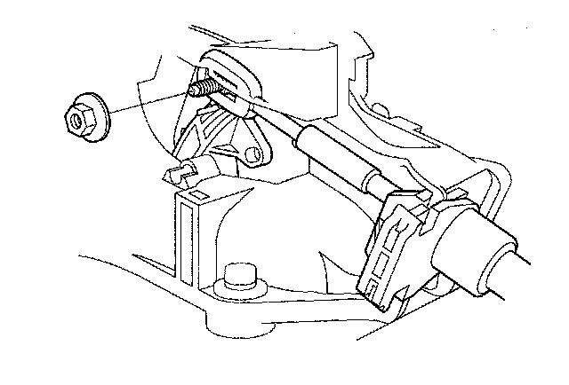
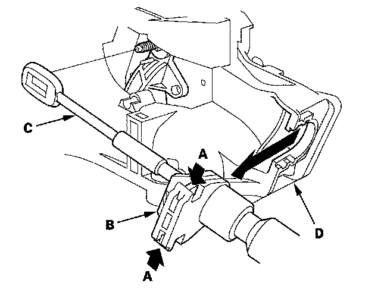
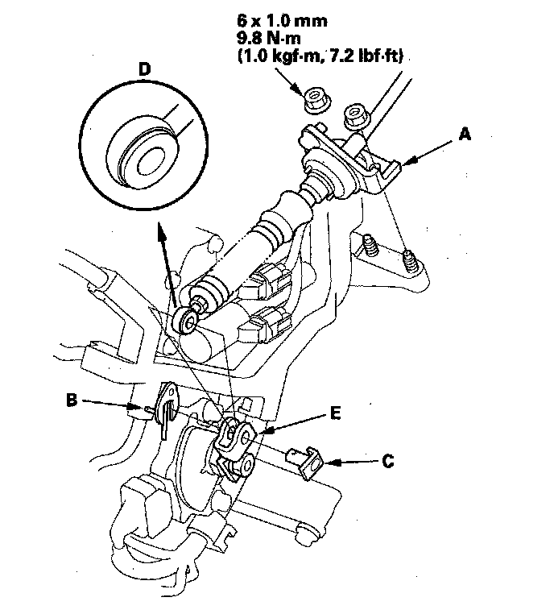
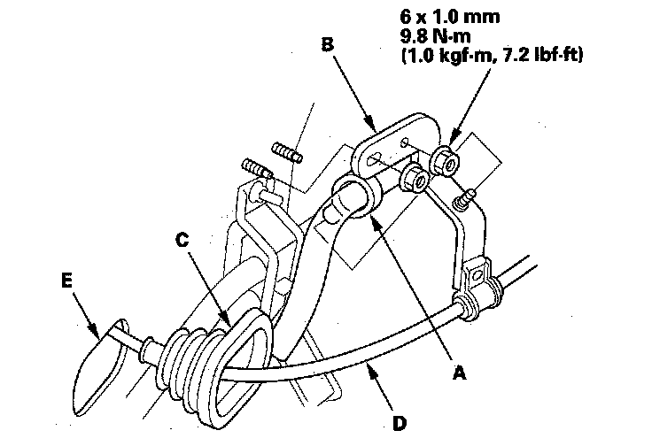

Shift Cable: Service and Repair
Shift Cable Replacement1. Raise the vehicle, and make sure it is supported securely.
2. Remove passenger's center console trim.
3. Remove the beverage holder inner case.
4. Shift the transmission into the R position.
5. Remove the nut securing the shift cable end.

6. Press the holder lock release (A) and pull out the socket holder (B) to remove the shift cable (C) from the shift lever bracket base (D).

7. Make sure you have the anti-theft codes for the audio system and the navigation system (if equipped).
8. Disconnect the negative terminal from the battery, then disconnect the positive terminal.
9. Remove the battery hold-down bracket, and remove the battery cover, battery, and battery tray.
10. Remove the under-hood subfuse box from its bracket, and remove the bracket from the battery base.
11. Remove the intake air duct and air cleaner housing.
12. Remove the battery base and battery base bracket.
13. Remove the nuts securing the shift cable bracket (A).

14. Remove the spring clip/washer (B) and control pin (C) then separate the shift cable end (D) from the control lever (E).
15. Remove the heat shield under the shift cable grommet.
16. Remove the drain hose clamp (A) from the shift cable bracket (B).

17. Remove the nuts securing the shift cable bracket.
18. Remove the shift cable grommet (C) and pull out the shift cable (D).
19. Insert the new shift cable through the grommet hole (E) and install the grommet in its hole. Do not bend the shift cable excessively.
20. Install the shift cable bracket, and install the drain hose clamp on the bracket.
21. Install the heat shield.
22. Apply molybdenum grease to the bore hole of the synthetic resin bushing in the shift cable end, and attach the shift cable end to the control lever, then insert the control pin into the control lever hole through the shift cable end, and secure the control pin with the spring clip/washer.
23. Secure the shift cable bracket with the nuts.
24. Install the battery base bracket and battery base.
25. Install the air cleaner housing and intake air duct.
26. Install the under-hood subfuse box on the battery base, and install the subfuse box on its bracket.
27. Install the battery tray, battery, battery cover, and battery hold-down bracket, then connect battery terminals.
28. Install the shift cable on the shift cable, and adjust the shift cable.
29. Enter the anti-theft codes for the audio system and the navigation system (if equipped). Set the clock.
30. Do the steering column position memorization.
31. Do the power window control unit reset procedure.